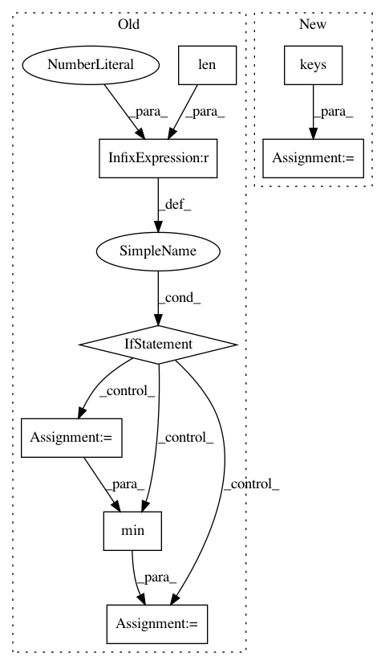

0c099396ea3f96919b3e613b16b399516e446c16,src/python/pants/cache/cache_setup.py,CacheFactory,select_best_url,#CacheFactory#Any#,211
Before Change
def select_best_url(self, remote_spec):
urls = remote_spec.split("|")
if len(urls) == 1:
return urls[0] // No need to ping if we only have one option anyway.
netlocs = map(lambda url: urlparse.urlparse(url)[1], urls)
pingtimes = self._pinger.pings(netlocs) // List of pairs (host, time in ms).
self._log.debug("Artifact cache server ping times: {}"
.format(", ".join(["{}: {:.6f} secs".format(*p) for p in pingtimes])))
argmin = min(range(len(pingtimes)), key=lambda i: pingtimes[i][1])
best_url = urls[argmin]
if pingtimes[argmin][1] == Pinger.UNREACHABLE:
return None // No reachable artifact caches.
self._log.debug("Best artifact cache is {0}".format(best_url))
After Change
def select_best_url(self, remote_spec):
urls = remote_spec.split("|")
netloc_to_url = {urlparse.urlparse(url).netloc: url for url in urls}
pingtimes = self._pinger.pings(netloc_to_url.keys()) // List of pairs (host, time in ms).
self._log.debug("Artifact cache server ping times: {}"
.format(", ".join(["{}: {:.6f} secs".format(*p) for p in pingtimes])))
best_url, ping_time = min(pingtimes, key=lambda t: t[1])
if ping_time == Pinger.UNREACHABLE:
self._log.warn("No reachable artifact caches.")
return None
In pattern: SUPERPATTERN
Frequency: 3
Non-data size: 8
Instances
Project Name: pantsbuild/pants
Commit Name: 0c099396ea3f96919b3e613b16b399516e446c16
Time: 2015-10-05
Author: tansy.arron@gmail.com
File Name: src/python/pants/cache/cache_setup.py
Class Name: CacheFactory
Method Name: select_best_url
Project Name: pfnet/optuna
Commit Name: d5d2a849496362535ceaeef92aff9bec4e2edeba
Time: 2020-04-30
Author: ytsmiling@gmail.com
File Name: optuna/storages/in_memory.py
Class Name: InMemoryStorage
Method Name: get_all_study_summaries
Project Name: pfnet/optuna
Commit Name: 26453d58671e01410b22287a723f76d6bb98803f
Time: 2020-05-11
Author: ytsmiling@gmail.com
File Name: optuna/storages/in_memory.py
Class Name: InMemoryStorage
Method Name: get_all_study_summaries